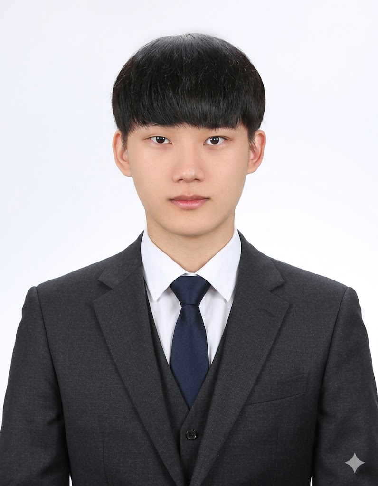

| 이 력 서 | ||||
|---|---|---|---|---|
| 인 적 사 항 | ||||
|
 |
이 름 | 박지우 | 이메일 | appleeid060302@gmail.com |
| 주 소 | 경기도 하남시 미사강변대로 135 1903동 802호 | |||
| 전화번호 | 010-7648-6580 | 생년월일 | 2006 / 03 / 02 | |
| 학 력 및 경 력 사 항 | ||||
| 기간 | 과정명 | |||
| 2026-03-03 ~ 2028-02-23 | 한국 폴리텍 Ⅱ 대학 인천캠퍼스 졸업 | |||
| 2027-08-19 ~ 2028-01-03 | 한국 폴리텍 산업체 지원 | |||
| 2028-06-03 ~ 2029-01-29 | [뱅크웨어글로벌] 프론트/백엔드 개발자 | |||
| 자 격 증 | ||||
| 취득 날짜 | 자격증이름 | |||
| 2025-12-11 | 제2종(보통·소형·원동기) 자동차 운전면허증 | |||
| 2026-07-28 | SQLD | |||
| 2026-09-17 | 컴퓨터활용능력 | |||
| 2027-06-08 | OCJP | |||
| 2027-12-19 | 정보처리기사 | |||
| 경 력 | ||||
| 기간 | 업무 내용 | |||
| 2028-06-03 ~ 2029-01-29 | 사용자가 이용하는 웹페이지나 화면등 오류들을 처리하였고,중요한 데이터들이나 프론트엔드와 소통할수있는 데이터 송수신을 관리하였음. | |||
| - | - | |||
| - | - | |||
| 자기 소개서 | ||||
| 성장 과정 | ||||
|
어린 시절, 친구들이랑 밖에서 뛰어놀면서 재미있게 놀았습니다. 하지만 친구들이 휴대전화를 갖게 된 이후로 밖에서 자주 놀지 않게 되어, 저는 그때마다 심심했습니다. 저는 당시 나이가 어려서 휴대전화도 없었고, 친구들은 휴대전화를 가지고 있었기 때문에 무척 심심함을 느꼈습니다. 하지만 친형의 휴대전화를 가져가서 처음으로 친구들과 '마인크래프트'라는 게임을 접하게 되었고, 그 게임에는 여러 가지 애드온 이나 모드를 설치해서 할 수 있어서 무척 신기하고 재미있었습니다. 그래서 저도 이러한 에드온이나 모드들을 만들고 싶어서 혼자 프로그램을 뜯어보면서 수정하고 새롭게 만들었더니 무척 즐거웠습니다. 그래서 이러한 프로그래밍을 배우기 위해 혼자 독학하며 공부하게 되었습니다. |
||||
| 학창 시절 | ||||
|
중학교 때 즈음, 그때 같이 게임하던 애들 중에 자기도 이런 신기한 프로그래밍을 만들어서 직접 게임에 적용하고 싶어 하는 애들과 함께 JSON 파일들과 config 파일들을 수정해 가며 만들어 나갔습니다. 하지만 저희는 프로그래밍에 대한 지식이 낮았고, 타 제작사가 만든 프로그램들을 보면서 지식을 서서히 쌓아갔습니다. 고등학생이 되었을 무렵에는 게임보다 운동 쪽에 관심이 더 갔어서 예체능 대학교를 지원하려고 입시 학원을 준비하였지만, 체육 쪽으로는 재능이 별로 없었던 저에게 체육 대학교는 높은 산과 같았고, 결국 대학교에 떨어지게 되었습니다. 상실감 속에서 시간을 보내던 중, 예전에 프로그래밍으로 파일들을 수정해 게임에 적용하며 놀았던 기억이 떠올랐고, 그때는 정말로 개발을 좋아했던 나에게 다시 도전할 기회를 주었습니다. 결국 저는 다시 1년 동안 공부하게 되었고, 대학 진로를 컴퓨터 관련 학과로 결정하게 되었습니다. 하지만 대학교에 들어가서 처음 접하는 C언어, Python, Java 활용 등 컴퓨터에 대한 지식이 별로 없었던 저에게는 대학교의 첫 수업조차 버겁게 느껴졌습니다. 그럼에도 불구하고 저는 프로그램 개발에 대한 관심과 끈기가 남아 있었고, 졸업한 후에도 계속해서 이 분야를 탐구하며 기여하기 위해 노력하겠습니다. |
||||
| 나의 장단점 | ||||
|
저는 재미있거나 흥미로운 것들에 한 번 관심을 두면, 시간이 좀 오래 걸려도 끝까지 완성하는 스타일입니다. 만약 할당 시간이 부족하더라도 지금 하고 있는 것은 다 끝내고 가겠다는 생각으로 작업하며, 끝나고 나서도 이것저것 활용하면서 바꿔가며 어떻게 하면 더 재미있고 간편하게 만들 수 있을지 고민합니다. 물론, 제가 해야 하는 것이 제가 관심을 둔 것이 아니면 작업이 초반에 비해 점점 느려지는 경향이 있지만, 나를 위해 계획에 따라 계속 작업하면서 끝까지 책임지는 끈기와 열정이 중요하다고 생각합니다. 저는 프로그램에 대한 흥미와 관심을 가지고, 계속 지식을 키우면서 앞으로 전진하고자 합니다. 저의 긴 이력서를 읽어주셔서 감사합니다! |
||||